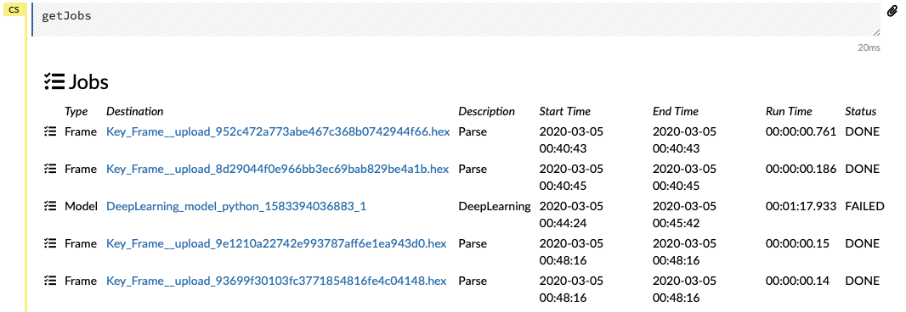
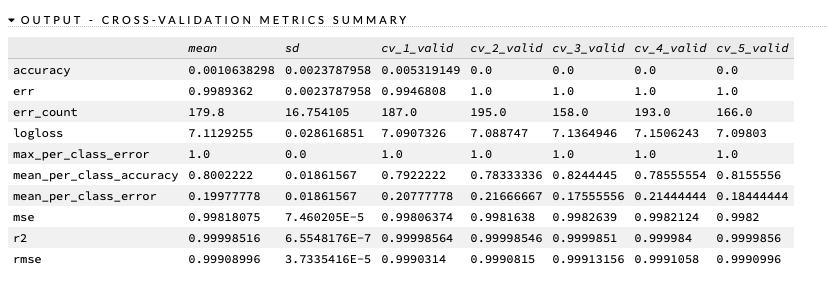

The first attempt at analyzing the text included tabulating:
The complete Python code for this section can be found: https://github.com/ckornafel/cipherproject/blob/master/code/Cyphertext_machine_learning.py
import pandas as pd
train = pd.read_csv('pred_train.csv')
test1 = pd.read_csv('pred_test1.csv')
train.head(10)## Unnamed: 0 index ... V51 V52
## 0 ID_ee32b1f8b 0 ... 0 0
## 1 ID_44eedb7fc 1 ... 0 0
## 2 ID_d897c21b7 2 ... 0 0
## 3 ID_808ab9107 3 ... 0 0
## 4 ID_e4f11a02d 4 ... 0 0
## 5 ID_01d606947 5 ... 0 0
## 6 ID_dd3754b2d 6 ... 0 0
## 7 ID_edcc139b7 7 ... 0 0
## 8 ID_c90fdfcbf 8 ... 0 0
## 9 ID_bd5fdcd3f 9 ... 0 0
##
## [10 rows x 60 columns]test1.head(10)## Unnamed: 0 index ... V51 V52
## 0 ID_000109bf8 53340 ... 0 0
## 1 ID_00038f3bd 102608 ... 1 1
## 2 ID_000651dd7 79003 ... 0 0
## 3 ID_000d158bc 93295 ... 0 0
## 4 ID_000ebdcae 1992 ... 0 0
## 5 ID_000f4b9d4 104229 ... 0 0
## 6 ID_00102d01b 97527 ... 1 0
## 7 ID_001c68a6c 101497 ... 0 0
## 8 ID_001d6c9f2 49935 ... 1 1
## 9 ID_0022645df 56708 ... 1 1
##
## [10 rows x 60 columns]I also created a smaller sample data set, as the training of certain models errored out after processing too long
train_sample = train.sample(n=900, random_state=1)
test1_sample = test1[test1['index'].isin(train_sample['index'])]
#Vlaidating that all test classes are still in train
test1_sample['index'].isin(train['index']).value_counts()## True 246
## Name: index, dtype: int64So the sampled test data set matches the sampled train data set cases - validating by index
The two data frames were successfully parsed and converted to H2O frame types.
After attempting to run the full train set (108k+) lines in H2O, I discovered that H2O caps the number of classes must be under 1000. Since each plain text sentence was its own class, I needed to adjust and a sampled data frames through instead

As we can see, the Deeplearning model failed out (due to too many classes) and smaller data frames were loaded instead.
As shown in the scoring history plot above, the log_loss for validation dropped steeply after the 1st epoch. I used only 10 epochs to keep the model from crashing, but it does not appear that using a larger number would have improved the results
The model did produce a variable importance chart shows that the most critical variables were letter frequencies (V10 = 10th most frequent character) that measured the larger sentences. Given that the most common length was 100 characters, this would indicate that the longer (and more rare) strings were able to identify the pattern better than the shorter strings. It also shows that the count of punctuation was also important - given that it was already discovered that punctuation was not changed within the cipher used.
The final output of the model shows that it was not a very accurate and well fitted one. The MSE and RMSE were almost 1 indicating a large amount of error generated.

Performing the cross validation did not highlight any possible improvements. The mean accuracy was 0.11% and a corresponding error rate of almost 100%
After adjusting the number of hidden layers and decreasing the epoch, the MSE did not improve (and in some cases actually got worse)
After determining the “best” fit model, I used the sample test set for prediction. The MSE for the prediction achieved a horrible 99.785% error rate (worse than just guessing)
When building the SVM model, the complete data set proved to be too large - so the sample data set was used instead. Prior to training the model, the data sets were encoded and scaled using StandardScaler() function. The gamma value was set to “auto”.
After fitting/training the model and then using the sample data sets to predict, the ending accuracy rate was determined to be 0.0 (I have never seen a score so low!)
This attempt showed that, given the train/test data sets, H2O Neural Network and SVM were unable to predict cipher text (given plain text examples) with any useful accuracy. While the NN performed much better than the SVM, it still did not preform as expected.
Thoughts: